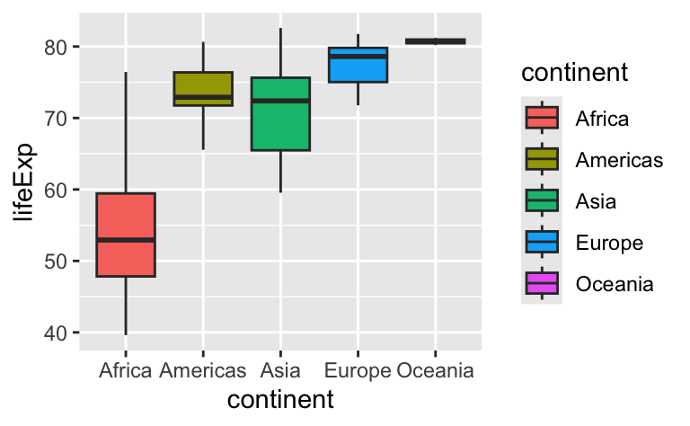
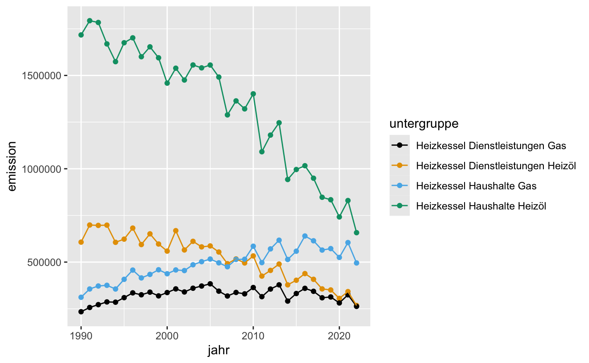

- Die Lernenden können fünf Funktionen aus dem R-Paket
dplyranwenden, um eine Teilmenge von Daten zur Verwendung in einer Tabelle oder einem Diagramm zu erzeugen. - Die Lernenden können Funktionen aus dem R-Paket
dplyranwenden, um Daten mittels deskriptiver Statistik zusammenzufassen.
Daten Transformation mit dplyr
rstatsZH - Data Science mit R
Lars Schöbitz
Jun 4, 2026
Lernziele (für diese Woche)
Datentransformation mit dplyr
Eine Grammatik der Datenmanipulation…
… basierend auf den Konzepten von Funktionen als Verben, die Dataframes manipulieren

filter: wählt Zeilen aus, die den Kriterien entsprechenarrange: Zeilen neu ordnenselect: Spalten nach Namen auswählenrename: Spalten umbenennenmutate: neue Variablen hinzufügensummarise: Variablen auf Werte reduzierengroup_by: für gruppierte Operationen- … (viele mehr)
dplyr rules
Regeln der dplyr-Funktionen:
- Das erste Argument ist immer ein Dataframe.
- Nachfolgende Argumente sagen, was mit diesem Dataframe geschehen soll.
- Gibt immer einen Dataframe zurück.
- Nichts wird an Ort und Stelle verändert.
Funktionen & Argumente
- Funktion:
filter() - Argument:
.data = - Argumente, die folgen:
year == 2007Was ist mit den Daten gemacht wird
Objekte
- Funktion:
filter() - Argument:
.data = - Argumente, die folgen:
year == 2007Was ist mit den Daten gemacht wird - Daten (Objekt):
gapminder_2007
Operatoren
- Funktion:
filter() - Argument:
.data = - Argumente, die folgen:
year == 2007Was ist mit den Daten gemacht wird - Daten (Objekt):
gapminder_2007 - Zuweisungsoperator:
<- - Pipe Operator:
|>
Grafik

Wir sind dran: Treibhausgasemissionen im Kanton Zürich
Daten
| jahr | hauptgruppe | untergruppe | thg | thg_agg | emission |
|---|---|---|---|---|---|
| 1990 | Abwasser und Abfall | Abfalldeponie | CO2 | CO2eq | 0 |
| 1991 | Abwasser und Abfall | Abfalldeponie | CO2 | CO2eq | 0 |
| 1992 | Abwasser und Abfall | Abfalldeponie | CO2 | CO2eq | 0 |
| 1993 | Abwasser und Abfall | Abfalldeponie | CO2 | CO2eq | 0 |
| 1994 | Abwasser und Abfall | Abfalldeponie | CO2 | CO2eq | 0 |
| 1995 | Abwasser und Abfall | Abfalldeponie | CO2 | CO2eq | 0 |
Data
| hauptgruppe | untergruppe |
|---|---|
| Abwasser und Abfall | Abfalldeponie |
| Abwasser und Abfall | Abwasserbehandlung |
| Abwasser und Abfall | Abfallverbrennung |
| Landwirtschaft | Fermentation bei der Verdauung |
| Landwirtschaft | Wirtschaftsdünger-Management |
| Landwirtschaft | Landwirtschaftliche Böden |
| Verkehr | Motorräder |
| Verkehr | Personenwagen |
| Verkehr | Linien-/Omnibusse |
| Verkehr | Reisebusse |
| Verkehr | Lastkraftwagen |
| Verkehr | Sattelzugmaschinen |
| Landwirtschaft | Land- und forstwirtschaftliche Maschinen |
| Industrie | Industrielle Fahrzeuge und Baumaschinen |
| Verkehr | Schiene |
| Verkehr | Schiff |
| Gebäude | Heizkessel Dienstleistungen Heizöl |
| Gebäude | Heizkessel Haushalte Heizöl |
| Gebäude | Heizkessel Dienstleistungen Gas |
| Gebäude | Heizkessel Haushalte Gas |
| Abwasser und Abfall | KVA |
| Industrie | Industrielle Prozesse nichtenergetisch |
| Industrie | Industrielle Prozesse energetisch |
Wir sind dran: md-03-uebungen
- Öffne posit.cloud in deinem Browser (verwende dein Lesezeichen).
- Öffne den rstatszh-k012 Arbeitsbereich (Workspace) für den Kurs.
- Klicke auf Start neben md-03-uebungen.
- Suche im Dateimanager im Fenster unten rechts die Datei
01-dplyr-wir.qmdund klicke darauf, um sie im Fenster oben links zu öffnen.
Pause machen
Bitte steh auf und beweg dich.

Bild erzeugt mit DALL-E 3 by OpenAI
Ihr seid dran: 02-dplyr-ihr.qmd
- Öffne posit.cloud in deinem Browser (verwende dein Lesezeichen).
- Öffne den rstatszh-k012 Arbeitsbereich (Workspace) für den Kurs.
- Klicke auf Continue neben md-03-uebungen.
- Suche im Dateimanager im Fenster unten rechts die Datei
02-dplyr-ihr.qmdund klicke darauf, um sie im Fenster oben links zu öffnen. - Folge den Anweisungen in der Datei.
R Terminologie
- Funktion:
filter() - Argumente, die folgen:
hauptgruppe == "Verkehr"Was ist mit den Daten gemacht wird - Daten (Objekt):
treibhausgase_verkehr - Zuweisungsoperator:
<- - Pipe Operator:
|>
Aufgabe: Verbundenes Streudiagram
Großartig für Zeitreihendaten
- Nutze die Daten treibhausgase_gebaeude und die Funktion
ggplot(), um ein verbundenmes Streudiagramm mitgeom_point()undgeom_line()zu erstellen.
Definiere folgende visuellen Eigenschaften:
- jahr auf der x-Achse;
- emission auf der y-Achse;
- untergruppe zur Einfärbung mit dem Argument
color = untergruppeinnerhalb vonaes()
- Ändere die Farben mit
scale_color_colorblind().
Aufgabe: Verbundenes Streudiagram

Wir sind dran: 03-dplyr-wir.qmd
- Öffne posit.cloud in deinem Browser (verwende dein Lesezeichen).
- Öffne den rstatszh-k012 Arbeitsbereich (Workspace) für den Kurs.
- Klicke auf Continue neben md-03-uebungen.
- Suche im Dateimanager im Fenster unten rechts die Datei
03-dplyr-wir.qmdund klicke darauf, um sie im Fenster oben links zu öffnen.
Pause machen
Bitte steh auf und beweg dich.
Bild erzeugt mit DALL-E 3 by OpenAI
Zeitpuffer: 03-dplyr-wir.qmd
Welche Konzepte kann ich nochmals erklären?
Zusatzaufgaben Modul 3
Modul 3 Dokumentation
Zusatzaufgaben Abgabedatum
- Abgabedatum: Donnerstag, 11. Juni
Danke
Danke!
Folien erstellt mit revealjs und Quarto: https://quarto.org/docs/presentations/revealjs/
Access slides als PDF auf GitHub
Alle Materialien sind lizenziert unter Creative Commons Attribution Share Alike 4.0 International.